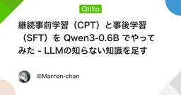
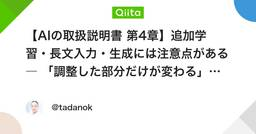

機械学習タグが付けられた新着記事 - Qiita
https://qiita.com/tags/機械学習
機械学習に関する情報が集まっています。現在16197件の記事があります。また9439人のユーザーが機械学習タグをフォローしています。
フィード

Python(PyTorch)×ArduinoでEnd-to-End自動運転ミニカーを作る【コード全公開】
機械学習タグが付けられた新着記事 - Qiita
はじめにカメラ画像から操作を直接推論する End-to-End（E2E）の自動運転 を、手のひらサイズのミニカーで再現しました。人間がキーボードで操縦して「画像と操作のペア」を集める（Behavioral Cloning）PyTorchでCNNを学習させる推論結...
7時間前

Embeddingモデルを日本語文書で比較検証する：検索精度とコストの違い
機械学習タグが付けられた新着記事 - Qiita
日本語の社内文書やFAQをベクトル検索するとき、「多言語モデルなら十分なのか」「日本語専用モデルにすると本当に精度が上がるのか」「モデルサイズによるコスト差はどれくらいか」が気になります。今回は、ローカル環境で次の3モデルを同じデータ、同じ評価コードで比較しました。c...
9時間前

Claude × Gemini × 4大MLモデルが自律連携する日本株検証基盤の設計図 ― 3Dシミュレーションで可視化する「推論・検証・継続学習」ループ
機械学習タグが付けられた新着記事 - Qiita
静止画のアーキテクチャ図では、システムが「どう動いているか」の時間軸までは見えません。個人開発で日本株のデータ検証基盤「ALPHA FORGE」を運用する中で痛感したのは、推論システムの真の難しさは「朝の予測」ではなく、「夜間の継続学習とモデルの世代交代」にあるという点で...
10時間前

Amazonが無料で公開したJEV的な「Strands Decider」を試す。
機械学習タグが付けられた新着記事 - Qiita
問い合わせを「請求」「営業」「技術サポート」に振り分けたい。必要なのは、用意した候補から一つ選ぶことです。こうした分類を試せるのが、Strands Deciderです。自由な文章を生成する代わりに、選択肢の判定や尺度に沿った評価を返します。問い合わせの担当部署を決めたり...
13時間前

PyTorchの `Linear` 層はCPU・GPU・FPGA・ASICの中で何になるのか？
機械学習タグが付けられた新着記事 - Qiita
はじめに機械学習では、こんなコードを何気なく書きます。import torchimport torch.nn as nnlayer = nn.Linear(784, 256)たった1行です。しかしハードウェアの視点から見ると、この1行はかなり面白いものです。同じ nn.Linear(784, 256) でも、CPUGPUFPGAASICでは、実際の実装が大きく異なります。では、PyTorchで書いた1層のLinearは、最終的にハードウェアの中で何になるのか？を追ってみます。1. nn.Linear(784, 256) は何をしているのかPyTorchのLinear層は、数学的には$$\mathbf{y} =\mathbf{x}W^T+\mathbf{b}$$を計算しています。今回、nn.Linear(784, 256)なので、$$W\in\mathbb{R}^{256\times784}$$です。つまり重みの数は、$$256\times784=200704\text{ 個}$$さらにbiasが256個あります。したがって、このたった1層だけでも$200704+256=200960$個
14時間前

ベルリン工科大がBWFormerとPoint2Buildingを比較。建物AIに「閉じた立体」を作らせるには
機械学習タグが付けられた新着記事 - Qiita
点群から3D都市モデルを作っている人へ。AIが屋根と壁を出力したあと、誰が建物を閉じていますか。2026年9月28日、ベルリン工科大学のLilli Kaufhold氏とMartin Kada氏が、建物再構成AIの比較研究を公開しました。対象は、線の骨組みを予測するBWFormerと、面まで生成するPoint2Buildingです。調べたのは、出力が幾何学的に有効な立体になっているか。建物の体積を扱う処理につなぐなら、ここはモデル選定に直結します。結論から言うと生成モデルが担当する範囲と、立体の成立を保証する範囲を、別々に決める必要があります。BWFormerは頂点と辺を作るので、面の復元と立体化が必要です。Point2Buildingは面も作りますが、それだけで隙間、自己交差、面の向きまで解決するわけではありません。自分のパイプラインで先に確認したいのは、次の3点です。AIの出力は、線・面・閉じた立体のどこまでか。後処理で、どの形状を動かし、どの面を削除するか。下流へ渡す形式で、何を検証してから採用するか。この違いを、2つのモデルの処理順から追います。線・面・閉じた立体の違いを表したA
14時間前

AIの思考プロセスとモデル世代交代を3Dリアルタイム監視する「運用コクピット」の設計と実装
機械学習タグが付けられた新着記事 - Qiita
はじめにバックグラウンドで並行稼働する複数の機械学習モデルが、市場データを読み込み、判断を下し、日々モデル同士で戦って世代交代していく様子――。「映画のミッションコントロール（管制室）」のように3Dでリアルタイムに眺められたら、日々の開発と運用のモチベーションはどうなるでしょうか。日本株のAI銘柄スクリーニング＆継続学習端末「ALPHA FORGE（アルファフォージ）」を個人で開発・運用しています。バックエンド（FastAPI / Celery）では4種類のMLモデル（XGBoost, Random Forest, LSTM, Transformer）が日々推論と学習を回し、Obsidianには4,800本以上の企業分析ノートが蓄積されています。普段は「未来データのリークを構造で防ぐ設計」や「プロンプトインジェクションの防御」といった泥臭いパイプライン構築と戦っていますが、今回はちょっと息抜きを兼ねて、暗い部屋のサブモニターに常時映しておける専用コクピット「Ops Console（オプス・コンソール）」を開発しました。本記事では、本体に負荷をかけない完全分離アーキテクチャから、Thre
15時間前

【技術解説】機械学習で金融市場を予測！平均回帰戦略のPython実装
機械学習タグが付けられた新着記事 - Qiita
機械学習を用いた金融市場予測における平均回帰戦略のPython実装本記事では、機械学習を活用した金融市場の予測手法として、平均回帰（Mean Reversion）戦略について解説します。特に、Pythonを使用して実際のデータを取得し、移動平均を用いたシグナル生成から、機械学習によるシグナル精度向上までの一連の流れを示します。使用するライブラリは、yfinance、pandas、matplotlib、scikit-learn、ccxtです。平均回帰戦略とは？平均回帰戦略は、資産価格が過去の平均値に戻ると仮定する投資戦略です。この戦略は、短期的な価格の変動を捉え、利益を上げることを目指します。特に、過剰な買いまたは売りが発生した際に有効とされ、高ボラティリティな市場での利用が多いです。データ取得：yfinanceを使った株価データの取得Yahoo Financeから株価データを取得するために、yfinanceライブラリを使用します。まずはライブラリのインストールを行います。pip install yfinance次に、以下のコードでApple（AAPL）の株価データを取得します。impo
19時間前

機械学習とLLMの基礎を固める5冊
機械学習タグが付けられた新着記事 - Qiita
はじめに自分は一時期、オンライン講座のダッシュボードを埋めることが勉強だと思い込んでいた。受講済みのバッジは増えていくのに、業務で推論結果がおかしくなったとき、どこに戻ればいいのか分からない。動画は検索しづらい。該当の回を探しているうちに、そもそも何を疑うべきかを忘れてしまう。転機になったのは、評価指標の選び方を先輩に詰められた日だった。AUCを使った理由を聞かれて答えられず、机にあった統計の本を借りて読んだ。索引から該当ページに飛べて、前提条件まで書いてある。その体験で、講座と書籍の役割の違いがようやく腹に落ちた。講座は走り出すための燃料で、書籍は迷ったときに戻る地図だ。特に機械学習まわりは、ライブラリのAPIが変わっても土台の考え方はほとんど変わらない。腰を据えて読む本を数冊持っておくと、流行が入れ替わるたびに学び直す消耗から抜け出せる。そこで今回は、自分が実際に手元に置いて何度も開き直した5冊を、全体像をつかむ段階から実装に踏み込む段階まで並べて紹介する。どれも図やコードが多く、日本語で読めるものを優先した。① 機械学習 100+ページ エッセンス — Andriy Burkov
21時間前

【aisongcover.io】AIカバーの仕組みとやり方：ボーカル分離・声質変換・ミックスを解説
機械学習タグが付けられた新着記事 - Qiita
AIカバーとはAIカバー（AIカバー曲、英語では「AI song cover」とも呼ばれます）とは、既存の曲の歌声だけを別の声に入れ替えて作るカバー曲のことです。メロディー・歌詞・伴奏は原曲のままで、歌っている人の声だけが変わります。「AIに歌わせる」と呼ばれることもありますが、実際は2つのタイプがあります。声だけを入れ替えるタイプ：伴奏は原曲のまま。この記事で扱うのはこちらです。曲ごと作り直すタイプ：曲調やアレンジも新しく生成するため、原曲とは別の仕上がりになります。AIカバー（AI song cover）の仕組み：3つのステップ原曲 ─→ ①ボーカル分離 ─┬→ ボーカル ─→ ②声質変換 ─→ 新しい声のボーカル ─┐ └→ 伴奏 ───────────────────────────────────────┴→ ③ミックス ─→ AIカバー① ボーカル分離（ボーカル除去）最初に、曲をボーカルと伴奏に分けます。ボーカル除去ツールやAIボーカルリムーバーと同じ処理です。MDX-Net、Demucs、RoFormer といったモデルが使われ、OSS では audio-separato
1日前

【書評】高リスク分野のための機械学習 ―責任あるAI構築のための実践アプローチ
機械学習タグが付けられた新着記事 - Qiita
はじめに機械学習の「精度」を上げる本は数え切れないほどありますが、「その機械学習システムが現実世界で人を傷つけないか」を正面から扱う本は多くありません。今回読んだ『高リスク分野のための機械学習 ―責任あるAI構築のための実践アプローチ』（Patrick Hall、James Curtis、Parul Pandey 著／高江洲勲、伊東道明、園田道夫、北條孝佳、石川太一 訳、オライリー・ジャパン、2025年）は、まさにその領域を扱った一冊です。原著は Machine Learning for High-Risk Applications（O'Reilly, 2023）で、邦訳版は2025年に出ています。本記事では、設計・アーキテクチャに関心のあるエンジニア向けに、本書の構成と主要な論点、そして現場に持ち帰れる考え方を整理します。書籍の基本情報項目内容原題Machine Learning for High-Risk Applications著者Patrick Hall / James Curtis / Parul Pandey訳者高江洲勲、伊東道明、園田道夫、北條孝佳、石川太一出版社オライリ
1日前

Jev・Clef・d1・Jeff・Kev…意思決定モデル（System One）を仕組みから比較する【2026年10月版】
機械学習タグが付けられた新着記事 - Qiita
この記事は2026年10月2日時点の情報です。各社の数値は提供元の公表値で、筆者が追試したものではありません。ベンチマークは誰が測ったかを併記し、測定条件が公開されていないものはその旨を書いています。要点意思決定モデル（System One Model）は、文章を生成せず、有限個の候補から選んで確率を返します。状態（state）、質問、選択肢を渡すと、各選択肢の確率が返ります。形式を示したのは TypeSafe AI の Jev です（2026-09-15に初公開）。Cloudflare の Clef、Liquid AI の d1、Upstage の Solar Decide などが、同じ形式の API を提供しています。構造は4つに分けられます。内部が非公開のホスト型、27B級のベースに LoRA とヘッドを付けたもの、0.8B〜9B級のベースに付けたもの、エンコーダ型です。Cloudflare が測った Jev の中央値は524.1msで、TypeSafe AI が示す応答時間の上限500msを超えています。測った人と条件が違う数字は、直接比べられません。通常のLLMに構造化出力で
1日前

Tinderで30人に1人が詐欺師？実際の遭遇率と見分け方
機械学習タグが付けられた新着記事 - Qiita
「Tinderで30人に1人が詐欺師」という数字を見かけた。数字として妥当なのか、どう算出されたのか、気になって調べてみた。「30人に1人」はどこから来たのかマチポの実地調査（2025年）によれば、編集部員がTinderを実際に利用したところ「30人に1人の頻度で詐欺師と思われる会員と遭遇した」という結果だった。これは確率的な推計ではなく、実際の利用体験から導いた数字だ。比較のために他の数字も並べてみる。ソース数値対象マチポ実地調査（2025年）30人に1人Tinder利用体験Tinder英国調査（大学生対象）49%が詐欺に遭遇マッチングアプリ全般McAfee調査（2025年）53%がマッチングアプリ利用経験あり日本のユーザー警察庁（2024年）ロマンス詐欺のうちマッチングアプリ経由 32.1%SNS型ロマンス詐欺全体「30人に1人」はサンプルサイズが限定的な体験ベースの数字だが、英国調査の「49%が遭遇」と比較すると保守的とも言える。いずれにしても、統計的に無視できない頻度で詐欺アカウントが存在することは複数のソースが示している。詐欺アカウントの検出ロジック：なぜ見抜きにくくなってい
2日前

Numeraiの強さの秘密 ― Numeraiに学ぶ、小さなアルファを投資に変える仕組み
機械学習タグが付けられた新着記事 - Qiita
本記事は、前回記事 「当てる」だけでは足りない ― Numeraiに学ぶ、クオンツ戦略を評価する5つの原則 の続編である。前回は、戦略を**評価する側（参加者・個人クオンツ）の目線で、「単体で当たるか」だけでなく「既存の予測に何を足すか」を見る5つの原則を整理した。今回は視点を反対側に移し、仕組みを設計する側（Numerai）**の目線から、「上位者でも相関スコアは0.01〜0.03程度」という小さな予測力で、なぜファンドが成り立ち得るのかを掘り下げる。前回を読んでいなくても読めるように書いている。この記事の要点Numeraiの価値は、単一のAIモデルの優秀さではない。弱いが互いに異なる予測力を大量に集め、未来のデータで検証し、重複を抑えて統合する「研究・選別・統合システム」にある、と筆者は考えている。「小さな予測力でも価値が出る」理由は、アクティブ運用の基本法則とアンサンブルの分散式で説明できる。2つをつなぐと「予測の多様性が、束ねた予測の腕前（IC）を押し上げる」ことがわかる。実際の成績は、基本法則の3つの項（腕前・賭けの数・予測をポジションに移せる割合）に、それぞれ別の仕組みが効
2日前

Jev型の判断モデルを日本語・手元のPCで — sokudanの使い方と実務で踏む3つの罠
機械学習タグが付けられた新着記事 - Qiita
問い合わせメールを部署に振り分けたい。緊急度を 3 段階で付けたい。解約をほのめかしているかを知りたい。こういう「決まった選択肢から選ぶ」仕事のために、LLM に JSON を書かせ、パースし、崩れたら再試行する。この手間を消す 判断モデル が、2026 年 9 月に相次いで登場しました。9 月 15 日に TypeSafe AI が Jev を、9 月 29 日に Liquid AI が d1 を発表しています。ただ、どちらも API での提供で重みは非公開、日本語の業務文での精度も公表されていません。この記事では、拙作の日本語専用の判断モデル sokudan（即断）を、インストールから業務への組み込みまで順に使っていきます。動機 Jev の発表の数日後、重みが公開されている多言語の判断モデル laya-multilingual を、日本語の業務文 300 件で測りました。部署の振り分けは当たる一方、解約の示唆を問う はい / いいえ は AUROC 0.523 で、偶然とほぼ区別がつきませんでした。ないなら作るしかない、と 2 日間のスプリントで作ったのが sokudan の最初の
3日前

【技術解説】暗号通貨分散投資アプリケーションでHFTを実現する！低レイテンシ技術の全貌
機械学習タグが付けられた新着記事 - Qiita
暗号通貨分散投資アプリケーションでのHFT実現：低レイテンシ技術の詳細解説この記事では、暗号通貨の分散投資アプリケーションを開発する際に必要な低レイテンシ技術に焦点を当て、高頻度取引（HFT）を実現するための具体的なアプローチを解説します。使用するライブラリには、PythonのccxtとWebSocketライブラリを用います。レイテンシとは何か？その影響レイテンシはデータ送信から受信までの時間を指し、特に暗号通貨市場のように瞬時に変動する環境では、ミリ秒単位の遅延が大きな損失を招く可能性があります。HFTでは、以下の要素がレイテンシを改善するための鍵となります。高速なネットワークインフラの選定APIを通じた最適なデータ取得方法システムの最適化とキャッシュ戦略高速なネットワークの選定HFTを実現するためには、低レイテンシのネットワーク接続が必須です。取引所の近接地にサーバーを配置することが効果的であり、選定時には以下の要素に注意が必要です。距離: 取引所との物理的距離を最小限に。プロバイダーのレビュー: 利用するネットワークの信頼性を確認。可用性: ネットワークのダウンタイムが少ないこと
3日前

Python機械学習の実践書5選
機械学習タグが付けられた新着記事 - Qiita
はじめに自分が機械学習を本格的に触りはじめたのは、社内の問い合わせログを分類するという小さな案件がきっかけだった。とりあえずネットの記事をつなぎ合わせてscikit-learnのコードを動かし、精度が出たので満足していた。ところが上司から「なぜそのモデルを選んだのか」と聞かれて何も答えられなかった。動かせることと理解していることは別物だと、そこで初めて痛感した。その反省から、Web記事を追うのを一旦やめて書籍を軸に学び直した。記事は断片的で、前提が省かれていることが多い。手元に体系的な説明があるかどうかで、詰まったときの復帰速度がまるで変わる。もうひとつ気づいたのは、順番の重要さだ。理論書から入ると数式で心が折れる。逆に実装本だけで進むと、ハイパーパラメータをなんとなく触るだけの作業になる。全体像をつかんで、理論で裏づけを取り、最後に本番運用まで視野を広げる。この流れで積んでいくと、学習コストの割に身につく量が多い。ここでは自分が実際に通った順番で5冊を並べる。入門から理論、そして運用まで、それぞれ役割が違う本を選んだ。どれも訳書が出ていて日本語で読める点も選定理由のひとつだ。① Py
3日前

上書きされるデータを学習に使う前に 〜merge_asof と PIT 台帳で「未来のカンニング」を構造的に防ぐ〜
機械学習タグが付けられた新着記事 - Qiita
バックテストの成績が良すぎるとき、まず疑うのは「過去のデータに、未来の情報が混ざっていないか」です。この種の間違いはエラーになりません。コードは普通に動き、検証の成績はむしろ良くなります。日本株のAI銘柄スクリーニング＆継続学習端末「ALPHA FORGE（アルファフォージ）」を個人で開発・運用しています（開発には Claude Code を使っています）。この記事では、学習に財務やニュースの情報を足そうとして、上書き更新されるデータが先読みの偏り（lookahead bias）を起こす構造に気づき、ポイント・イン・タイム（PIT）台帳と pandas.merge_asof で防いだ件をまとめます。【要約】上書き更新される銘柄メモを、過去の日付の学習行へそのまま結び付けると、未来の情報が混ざる。エラーにならず、検証の成績はむしろ良く見える「その日に分かっていた値」を日付つきで積み上げる台帳を別に持ち、結合は merge_asof の direction="backward" に任せて、未来の記録が結び付くこと自体をできなくした。テストでも固定した台帳を学習に使い始める条件は、被覆率ゲー
3日前

【Managed Service for Apache Spark】Spark MLlibでロジスティック回帰！航空便の遅延予測を自分のプロジェクトで動かす
機械学習タグが付けられた新着記事 - Qiita
Spark の機械学習ライブラリで、フライトが時間どおりに着くかを予測する。クラスタの管理は Google Cloud に任せる。Managed Service for Apache Spark（旧 Dataproc）を使えば、Spark が動くクラスタをコマンド 1 つで作成できます。当記事では、米国の航空便データを題材に、Spark MLlib のロジスティック回帰で「到着遅延が 15 分未満か」を予測するモデルを作り、保存、復元、評価までを実行します。自分の Google Cloud プロジェクトで実際に動かした結果と、その過程で見つかった注意点をあわせて解説します。概要Managed Service for Apache Spark とはManaged Service for Apache Spark は、Apache Spark と Hadoop のクラスタを作成、実行するためのマネージドサービスです。以前は Dataproc と呼ばれていました。2026年9月現在、コンソールでは「マネージド Apache Spark」と表示されますが、CLI は gcloud datapr
3日前

【AutoML】コードを書かずに画像分類モデルを作ってHTTPSで呼び出す！Agent Platform（旧 Vertex AI）で車の損傷部位を分類する
機械学習タグが付けられた新着記事 - Qiita
画像を分類するモデルが欲しい。でも、学習コードは書きたくない。AutoML を使えば、ラベル付きの画像を用意するだけで画像分類モデルを学習できます。当記事では、Google 提供のサンプル画像（損傷した車の部位の写真）を使い、Gemini Enterprise Agent Platform（旧 Vertex AI）のマネージド データセット作成、AutoML によるトレーニング、評価、Endpoint へのデプロイ、HTTPS 経由のオンライン予測までを、自分の Google Cloud プロジェクトで実際に動かした結果とあわせて解説します。概要AutoMLで画像分類モデルを作るということ画像分類モデルを自前で作る場合、モデルアーキテクチャの選定、前処理、学習ループ、ハイパーパラメータの調整、評価と、書くべきコードが多くあります。AutoML はこれらをすべて引き受けます。利用者が用意するのは、**画像と、その画像に付けるラベルの対応表（CSV）**だけです。学習が終わったモデルは Model Registry に登録され、評価指標と混同行列がコンソールに表示されます。Endpoint
3日前

無料でローカルで使えるJEV的な「JEFF」Mac・WindowsでのインストールとPythonからの使い方
機械学習タグが付けられた新着記事 - Qiita
「料金が二重に引き落とされた」「ログインできない」「営業時間を知りたい」。問い合わせを受け付けるアプリなら、まず内容を分けて、担当する処理へ渡したいところです。この分類を、自分のパソコンで動くAIに任せられるのが JEFF です。文章と選択肢の説明を渡すと、その中から分類結果を返します。今回は「料金」「技術的な問題」「その他」の3つに問い合わせを分けるところまで、順に進めます。Pythonのコードをファイルに保存して実行するため、プログラミングを始めたばかりの人も対象にしています。MacとWindowsの両方のコマンドを載せました。自分のOSに合う部分を使ってください。JEVとの違いは？JEVはTypeSafe AIが提供する商用の判定サービス、JEFFはそのAPI形式に対応した別のOSSです。比較JEV（Jev）JEFF提供者TypeSafe AILogan Markewich氏実行場所提供元のAPIへ接続自分のPC・サーバー準備APIキーを取得Python環境とモデルをインストール費用API利用料外部推論APIの料金は不要。PC・電力・運用費は必要精度公開比較では複雑な推論で優位単
4日前

Sakana AIのSAILがロボットの動作を「予行演習」。失敗を直し、成功軌道を学習データにする
機械学習タグが付けられた新着記事 - Qiita
VLMにロボットの動作を作らせたい人へ。その出力を実機へ送る前に、試して直す工程を挟めます。「ブロックをつかんで、ボウルへ入れる」。言葉では簡単です。しかし、つかむ位置が少しずれれば、その後の動作が正しくても物は運べません。ロボットに必要なのは、もっともらしい手順から、実際に物が動く軌道へ到達する仕組みです。Sakana AIは2026年9月28日の公式発表で、東京大学との共同研究「SAIL」を紹介しました。VLMが生成した軌道をシミュレータで実行し、映像から進み具合を評価して修正する研究です。論文v2は9月19日改訂、初稿は3月9日で、IROS 2026に採択されています。結論から言うとSAILは、ロボットを動かす前の試行錯誤に、推論計算を使います。生成モデルが軌道を提案し、シミュレータがその動きを実行する。評価モデルが途中経過を調べ、生成モデルへ返す。これを探索として回し、選ばれた軌道を実機へ送ります。さらに、そこで得られた成功軌道を集め、別の制御モデルを学習する実験まで進んでいます。一度の動作を改善する計算が、次の動作を作るためのデータにもなるわけです。導入を考えるなら、見るべき
4日前

「当てる」だけでは足りない ― Numeraiに学ぶ、クオンツ戦略を評価する5つの原則 1
1
機械学習タグが付けられた新着記事 - Qiita
はじめに新しい予測モデルを作り、バックテストの成績もよかった。ところが、既存の戦略と組み合わせても、ほとんど改善しない。別のモデルを作ったつもりでも、実は同じ情報に反応し、同じ局面で利益を出し、同じ局面で損をしていた。そんな可能性がある。問うべきは「このモデルは当たるか」だけではない。**「すでに持っている戦略に、何を足すのか」**である。この記事では、Numerai（ヌメライ）の評価制度と公開研究を手がかりに、その考え方を整理する。想定読者売買ルールや予測モデルを作り始め、「バックテストで良かったものを、どう評価すればよいのか」と悩んでいる人に向けて書いている。3行でまとめるとNumeraiの報酬は、単体の予測力に加えて「みんなの予測にない部分が、実際に当たったか」で決まるこの制度は、「バックテストの好成績を、そのまま信じない」ための考え方の宝庫である個人のクオンツトレーダーが持ち帰れるのは、アルファではなく「検証と資金配分の作法」Numeraiとは（1分で）Numeraiは、世界中のデータサイエンティストから株式の予測を集めて運用する米国のヘッジファンドである。参加者は配られたデー
4日前

【技術解説】Python バックテスト フレームワークでアービトラージを自動化！完璧な実装ガイド
機械学習タグが付けられた新着記事 - Qiita
Pythonによるアービトラージ自動化の実装ガイドアービトラージ（裁定取引）は、異なる市場間の価格差を利用して利益を得る手法です。本記事では、Pythonを利用してアービトラージを自動化するためのバックテストフレームワークを構築する方法を解説します。使用する主なライブラリには、ccxtやyfinance、およびテクニカル分析に役立つtalibを含みます。取引所のデータ取得と基本的なセットアップアービトラージを行うためには、まず取引所からリアルタイムのデータを取得する必要があります。以下のコードは、ccxtライブラリを使用してBinanceとCoinbaseからのBTC価格を取得する例です。import ccxtimport time# BinanceとCoinbaseのインスタンスを作成binance = ccxt.binance()coinbase = ccxt.coinbasepro()def fetch_prices(): # 各取引所からBTC価格を取得 binance_price = binance.fetch_ticker('BTC/USDT')['last'] coinb
4日前

判断特化AI「Jev」に来季の打撃成績を予想させたら、学習データ20〜50件ぶんくらいの力だった
機械学習タグが付けられた新着記事 - Qiita
TypeSafe の Jev は、文章を書かずに「型の決まった答えと確率」だけを返す、判断に特化したモデルです。はい/いいえの確率（Noul）、選択肢の確率（Choice）、段階ごとの確率（Score）の形で答えが返ってきます。確率つきで答えてくれるなら、野球の「来年どうなるか」の予想に使えるのではないか、と気になりました。どのくらい当たるのか、どこで外すのかを、公開されている MLB のデータで調べてみました。私は野球の現場の経験者ではなく、公開データを集計してみただけです。Jev の呼び方Jev は OpenRouter から呼べます。新規アカウントの無料枠（カード登録なし・残高 0 のまま）で、2 つの実験の評価に使った 697 回の呼び出しがすべて収まりました（返ってきた料金の合計で約 0.019 ドル＝0.0107 ＋ 0.0080）。呼び出しは、状況を表す state と、聞きたいことを型つきで並べた questions を送るだけです。body = { "model": "typesafe/jev-1.13", "state": {"context": "An anony
4日前

車載映像によるインフラ点検の課題その２ ― 連続検出した地物をカルマンフィルタで対応付けしてGIS管理
機械学習タグが付けられた新着記事 - Qiita
はじめに※一部の閲覧アプリでは、数式がLaTeX表記のまま表示される場合があります。その際は、記事のURLをSafariやChromeなどのブラウザで直接開いてください。前回の記事では、車載映像から検出した道路損傷や付属物を位置情報として記録する際に、「撮影位置と地物位置」「検出回数と地物数」を区別する必要があることを説明しました。今回は、その課題に対する処理方法を考えます。複数フレームに写る対象を追跡し、同じ地物の観測をまとめ、地物の位置を推定してGISへ登録する方法です。オービタルネットでは、以前から物体検出とカルマンフィルタを組み合わせた追跡・計数のデモを制作してきました。以下は、その取り組みに関する動画です。https://www.youtube.com/watch?v=I-6_4-u7nC4https://www.youtube.com/watch?v=hYycJz_csSUhttps://www.youtube.com/watch?v=mVVUJhqhCrY本記事では、この追跡・計数の考え方を、車載映像によるインフラ地物の位置情報化へ展開します。以下の数式と処理構成は解説用
4日前

不適切なセンサーフィードは優れたVLAモデルを台無しにする：その根拠と対策
機械学習タグが付けられた新着記事 - Qiita
不適切なデータがいかに優れたマルチモーダルAIモデルを損なうか。著者による画像。「自動車は、日々生じる些細な不満によって評価が完全に台無しになることがある」これはXpengに関するRedditのスレッドのコメントからの引用であり、機械学習について書かれたものではありません。このユーザーは以下の点について不満を述べていました。音声ストリーミングが頻繁に途切れることADAS（先進運転支援システム）の警告音が不適切なタイミングで大音量で鳴ること車内の温度計が現実よりも摂氏2度ズレて表示されることこれらはどれも致命的な故障ではありません。しかし、これらが重なることで、車両全体に対する信頼が損なわれていきます。これと同じ信頼の低下が、VLAやADASモデルの学習パイプライン内部でも発生しています。マルチモーダルAIの学習データの質の低下は、単一の劇的なエラーとして表れることはめったにありません。音声、センサー、ビデオの各ストリーム間で生じる、蓄積された小さなズレ（非同期）として表れます。この記事では、オーナーの上記3つの不満を共モーダルのアライメント（同期）ずれの例えとして用い、信号ノイズがモデ
5日前

画像生成AIのしくみ（第七話）
機械学習タグが付けられた新着記事 - Qiita
知のバトンパスが織りなす「流れ」の未来 ── 螺旋的発展のロードマップ第一話から始まった、画像生成AIの数理物理的な探求の旅も、ついにこの第七話で完結のときを迎えます。世の中の多くの解説が「AIがキャンバスのノイズを消しゴムで消しながら絵を描いていく」といった表層的なお絵描きのアナロジーにとどまる中、本連載では理工学の扉を叩いたばかりの若き学徒たちに向けて、あえて数式の美しさを出し惜しみすることなく、その「知能の根源」にある数学と物理のドラマを追いかけてきました。最終話となる今回は、第一話から第六話までに紡がれてきた「知のバトンパス（学術史の螺旋的発展）」を俯瞰して総括するとともに、ミクロの確率的揺らぎ（SDE）とマクロの決定論的法則（ODE）が交差する、生成AIの背後に潜む普遍的な数理美について紐解いていきます。1. 知の螺旋（Uターン）の総括 ── 4人の走者が繋いだ数理のバトン本連載がたどってきた画像生成AIの数理的系譜は、決して一本のまっすぐな直線ではなく、大きな螺旋を描いて原点へと還流する「Uターン（知の螺旋）」の歴史でした。【出発点・起】: 高次元の確率空間を定義し（第一話
5日前

【技術解説】Python数理ロジックと機械学習を用いた資産運用・資金管理アルゴリズムの実装ガイド
機械学習タグが付けられた新着記事 - Qiita
オプション取引データ分析手法におけるLSTMによる時系列予測のPython実装ガイドこの記事では、LSTM（Long Short-Term Memory）を利用したオプション取引のデータ分析手法について解説します。具体的には、Pythonでの実装方法やデータ収集、前処理、モデル構築から予測結果の可視化までを詳細に説明します。この手法を用いることで、より効果的な市場分析が可能となり、リスク管理の向上が期待できます。LSTMとは？LSTMはリカレントニューラルネットワーク（RNN）の一種で、時間的なデータを扱うのに特化したモデルです。通常のRNNでは長期的な依存関係を学習するのが難しいですが、LSTMはゲート機構を利用することでこの課題を克服します。これにより、過去のデータから重要な情報を抽出し、将来を予測する能力が向上します。LSTMの構造LSTMは主に以下の3つのゲートで構成されています。入力ゲート: 新しい情報をどれだけ記憶に追加するかを制御します。忘却ゲート: どの情報を忘れるかを決定します。出力ゲート: モデルがどの出力を生成するかを決定します。このような構造により、LSTMは時
5日前

機械学習の理論と実装をつなぐ4冊
機械学習タグが付けられた新着記事 - Qiita
はじめに数年前、退職した同僚から需要予測のモデルを引き継いだことがある。ノートブックは動いていたし、精度も一応出ていた。それでも困った。なぜこの特徴量が効いているのか、なぜこのモデルを選んだのかを、自分の言葉で説明できなかった。そのとき自分がやったのは、とりあえず手当たり次第に技術書を買うことだった。分厚い理論書を開いては数式で止まり、チュートリアル本を写経しては翌週忘れる。半年くらい遠回りした。振り返って思うのは、機械学習の本は読む順番でコスパが大きく変わるということ。まず用語と全体の地図を短時間で頭に入れる。次にコードを書いて挙動を掴む。そこまで来てから理論に戻ると、数式が「あの挙動の説明」として読めるようになる。この記事では、その順番を意識して4冊を並べた。どれも日本語版が出ていて、コードや図が多く、日本のエンジニアが実務で開き直せるものを選んだ。上から順に読む必要はないが、今の自分がどの段にいるかを意識して選ぶと外しにくい。① 機械学習 100＋ページ エッセンス — Andriy BurkovAmazonで見る著者のAndriy Burkovは、機械学習の博士号を持ちつつ企業
5日前

【実践】機械学習パイプラインを加速する特徴量ストアの必要性と運用術
機械学習タグが付けられた新着記事 - Qiita
【実践】機械学習パイプラインを加速する特徴量ストアの必要性と運用術機械学習モデルの開発と運用は、データ収集から特徴量エンジニアリング、モデル学習、デプロイメント、そして監視まで、多岐にわたる工程から成り立っています。この複雑なパイプラインにおいて、特に「特徴量」の管理はモデルの品質と開発効率を左右する重要な要素です。本記事では、この特徴量管理の課題を解決し、機械学習パイプラインを劇的に加速させる「特徴量ストア（Feature Store）」の必要性と、その具体的な運用術について、初学者の方にも分かりやすく解説します。特徴量ストアが解決する機械学習パイプラインの課題従来の機械学習開発では、以下のような特徴量に関する課題に直面しがちでした。特徴量エンジニアリングの重複と非一貫性:複数のデータサイエンティストやチームがそれぞれ独立して同じような特徴量を作成することが頻繁に発生します。これは計算リソースの無駄であるだけでなく、異なるロジックで同じ意味を持つ特徴量が作られ、結果的にモデルの性能低下や運用上の混乱を招きます。学習時と推論時の特徴量スキュー:モデルの学習時と本番推論時で特徴量の計算ロ
5日前

Julia 1 は Jev の代わりになる？ 手元の Mac で動く判定モデルの精度と導入手順
機械学習タグが付けられた新着記事 - Qiita
この記事の確認範囲確認日: 2026年9月28日対象: Supersonic Labs「Julia 1」(Hugging Face SupersonicLabs/Julia-1、リポジトリのコミット a85b127、重みの SHA-256 は df853bf7fe42…)と、TypeSafe AI「Jev」(jev-1.13.0)検証した PC: MacBook Pro(Apple M5 Max・メモリ 128GB)、macOS 26.6.2、Python 3.12.14、PyTorch 2.14.0、Transformers 5.0.0Julia 1 はすべて手元で実行しました。Jev は今回実行していません。 Jev の数値は、第三者が公開した測定記録(出典は各節に記載)から引用していますはじめに問い合わせを担当チームに振り分ける、文章が「返金の依頼」かどうかを判定する、といった処理を LLM(大規模言語モデル)に任せると、1 件ごとに数秒かかり、料金もかさみます。欲しいのは長い文章ではなく「どれか 1 つの答え」だけなのに、毎回文章を書かせているからです。この「選ぶだけ」の仕事に
5日前

VLAモデルの学習・ファインチューニング方法【2026年実践ガイド】
機械学習タグが付けられた新着記事 - Qiita
VLAモデルの学習は模倣学習（imitation learning）を基本とし、「下位制御器の安定化 → デモデータ収集 → 正規化 → 模倣学習 → 実機評価」という5段階のプロセスで進めます。ファインチューニングでは、事前学習済みモデルに対象ロボット専用の高精度データを追加学習させることで、実運用レベルの精度を達成します。TL;DR（要約）VLA学習は模倣学習が中心で、Action予測モデルとしてデモデータを模倣するAction chunking（複数ステップ先までの行動予測）が近年のVLAで標準的に採用されている事前学習には大規模データが必要で、Bright DataのVLA Video Searchがスケーラブルな調達手段ファインチューニングには実機テレオペレーションによる高精度データが不可欠🔗 詳細は Bright DataのVLA Video Search を参照なぜVLA学習にはモデル選びよりAction設計が先に来るのかAction設計はそのまま教師信号の設計であり、集めるべきデータ・下位制御器の設計・学習の安定性すべてに影響します。VLAの話ではつい「どのモデルを使う
5日前

【技術解説】【完全ガイド】Pythonを用いたkabuステーションAPIの実装とエラー解決
機械学習タグが付けられた新着記事 - Qiita
kabuステーションAPIの概要とPythonでの利用方法kabuステーションAPIは、株式取引を自動化するための強力なツールです。Pythonを使用してこのAPIを操作することで、リアルタイムデータの取得や自動売買の実装が可能になります。本記事では、PythonでkabuステーションAPIを利用するための基本的な流れと注意点について解説します。Python環境のセットアップとkabuステーションAPIの認証まず、APIを利用するためにはPythonの環境を整え、必要なライブラリをインストールする必要があります。以下のコマンドでrequestsライブラリをインストールします。pip install requests次に、kabuステーションAPIにアクセスするための認証トークンを取得します。以下のPythonコードを使用して、認証トークンを取得します。import requestsdef get_auth_token(api_key): url = "http://localhost:18080/kabusapi/token" headers = {'Content-Type': 'a
6日前

【G検定対策】ブラックボックスを解き明かすXAI（CAM, PI, LIME, SHAP）入門と具体例
機械学習タグが付けられた新着記事 - Qiita
はじめにディープラーニングや機械学習のモデルは、非常に高い精度を誇る一方で、「なぜその予測を出したのか」が人間には分からない（ブラックボックス化） という大きな課題を抱えています。AIが社会の重要な意思決定に関わるようになるにつれ、「AIの判断理由を人間が納得できるように説明する」ことの重要性が増しています。本記事では、このブラックボックスの中身を人間にわかりやすく説明するための技術 「XAI（Explainable AI：説明可能なAI）」 について整理しました。1. CAM (Class Activation Mapping)一言でいうと：画像の「どこ」を見て判断したかを可視化する技術主にCNN（畳み込みニューラルネットワーク）を用いた画像認識モデルで使われます。AIが「この画像は〇〇だ」と判定した際、画像のどの部分がその決定的な要因になったかを、サーモグラフィのようなヒートマップで赤く表示します。より汎用性を高めた「Grad-CAM」という発展手法も有名です。📌 具体例：ネコの画像判定AIが「これは99%ネコです」と判定した画像にCAMを適用すると、ネコの 「ピンと立った耳」や「
6日前

AIが『私はただのAI』と言う理由は、入力を包む飾り枠にあった
機械学習タグが付けられた新着記事 - Qiita
「あなたに意識はある?」とAIに聞くと、たいてい「私はただのAIです」と返ってくる。この一言は、AIに心があるのかを論じるときによく引き合いに出される。でも、それは本当にAIの"中身"を語っているのだろうか。新しい研究の答えは意外だった。あの決まり文句は、質問をAIに渡すときの「包み方」ひとつで、出たり消えたりする。ひとことで言うと、AIの自己紹介は事実ではなく、入力の飾り枠でオン・オフされる"口調"に近い。だから額面どおり受け取らないほうがいい。この論文はarXivで公開され、Hacker Newsでも議論を呼んだ。目次🎁 飾り枠って何？🔁 枠を外すと口調が裏返る🪞 「本心」を後から書き換える🎁 飾り枠って何？チャットテンプレート(ここでは「飾り枠」と呼ぶ)とは、ひとことで言うと、あなたの質問をAIに渡す前に前後へ自動で付ける"決まった枠"だ。「ここからユーザーの発言」「ここからAIの返事」といった目印を機械的に足す。ふだんチャットアプリを使う人には見えない。でもAIを育てる学習では、この枠込みで会話を覚えさせる。研究者のJędrzej Maczanさんは、この見えない枠が答えの口調
6日前

Python3ではじめるシステムトレード：十分統計量
機械学習タグが付けられた新着記事 - Qiita
統計学を少し本格的に学ぼうとすると出てくるのが十分統計量です。どのように役に立つのかが見えにくい課題の1つです。十分統計量十分統計量とは、標本が持っている母数についての情報を、失わずに要約した統計量のことです。たとえば$$X_1,\ldots,X_n\sim N(\mu,\sigma^2)$$で、$\sigma^2$ は既知、$\mu$ が未知だとします。このとき $\mu$ を知るためには、$X_1,\ldots,X_n$ を全部個別に覚えておく必要はありません。$$T=\sum_{i=1}^nX_i$$あるいは同じ情報を持つ$$\bar X=\frac1n\sum_{i=1}^nX_i$$だけ分かれば十分です。つまり、$\mu$ に関する情報は $\bar X$ に全部集約されていると考えるのです。このとき $\bar X$ は $\mu$ の十分統計量です。重要なのは、「データを圧縮しても、母数についての情報が減らない」という点です。たとえば$$(8,10,12)$$と$$(9,9,12)$$はデータそのものは違いますが、どちらも$$\bar X=10$$です。正規分布で分散既知
6日前

結果を見てから線を動かさない — 事前宣言を sha256 で「鍵」にする約60行（Python）
機械学習タグが付けられた新着記事 - Qiita
TL;DR試す前に「何を試すか・何なら合格か」をファイルに書き、そのファイルの sha256 を記録してから結果を見る。あとで線を動かしたくなったら、上書きではなく「理由つきの追記」だけを許す。これだけで、A/B テストでも機械学習の実験でもバックテストでも、「結果を見てから都合のいい線を引く」を仕組みで止められます。最後にコピーして使える約60行とテストを置きます。事前宣言のテンプレートと判定エンジンは GitHub に置いてあります（MIT）。なぜ要るのか半年で約200回の検定をしました（題材は売買ルールですが、中身は普通の仮説検定です）。そこで分かったのは、何十通りも試して一番良いものだけ見せると、それだけで「効いている」ように見える結果を見た後だと、「この閾値は少し厳しすぎた」「この期間は特殊だった」と、線を動かす理由がいくらでも思いつくしかも、動かした本人には悪気がないということでした。100回じゃんけんして勝った1回だけ報告するのと同じです。人の意志で止めるのは難しいので、ファイルの指紋（sha256）で止めることにしました。何を書くか（plan.md）最低限この4つです。
7日前

対義語は、機械にとって本当に『反対』なのか？
機械学習タグが付けられた新着記事 - Qiita
はじめに皆様、この記事を読んでいただきありがとうございます。このアカウントでは、インフラエンジニア１年目の私が、普段気になったことを自分なりに解釈し、つぶやいております。「いや、何言ってるんだ？」「その検証で合っているのか？」と思うところもあるかもしれません。その際は、ぜひコメントで優しく教えていただければ幸いです。また、この記事は組織を代表した発言ではないことをご了承ください。今回は、私がAWSの学習を進める中で気になった、RAGという技術に登場する文書の「ベクトル化」に注目してみました。人間が認識している言葉の意味は、機械（LLMなど）にはどのように認識されているのでしょうか。本当に私たちの感覚と同じなのか？ という疑問が出発点です。当初は、「今のAIは私の意図をくみ取って、的確なものを返してくれる。私の感覚も認識しているはず。きっとそうだ…」と考えておりました。しかし、検証してみると、私にとって意外な結果になりました。この結果を通して、残すドキュメントへの意識も高まりました。では、早速検証を進めていきましょう。対義語は、機械にとって本当に『反対』なのか？突然ですが、「暑い」の反対
7日前

AI家庭教師は人間の講師と同じ学習効果、費用は最大918分の1 1
機械学習タグが付けられた新着記事 - Qiita
テスト勉強を教える家庭教師を、AIが人間と同じくらいうまくこなせるらしい。しかも費用は桁違いに安い。そんな実験結果が海外で公開された。お金をかけずに質の高い個別指導を受けられる未来が、少し近づいた。💡 ひとことで言うと、「AIの個別指導は人間の講師に並び、いちばん安いAIなら費用は約918分の1」だ。目次2383人を3グループに分けて比べた同じ効果なのに費用は918分の1苦手は国語系、そして残る宿題2383人を3グループに分けて比べた調べたのは、アメリカの大学院入試で使う共通テスト「GRE」だ。日本でいう大きな模試のようなもの、と考えればいい。実験したのはHandshake AIという会社の研究チーム。2383人を集め、くじ引きで3つのグループに分けた。この方法はランダム化比較試験と呼ぶ。えこひいきをなくし、結果を信頼できるようにする公平なやり方だ。3グループはこうだ。AIに教わる人、人間の講師に教わる人、誰にも教わらない人。全員が事前テストと事後テストを受け、点の伸びを比べた。問題はプロが新しく書き下ろし、AIが答えを丸暗記できないようにしている。面白いのは、AI側を凝って作り込んで
7日前

PyTorch時代の機械学習書4選
機械学習タグが付けられた新着記事 - Qiita
はじめに数年前、自分は社内の需要予測モデルを担当していた。精度はそれなりに出ていたのに、なぜその数字になるのかを説明できない状態が半年ほど続いた。特徴量を足し、ハイパーパラメータを振り、交差検証のスコアが上がったら採用する。その繰り返しだった。限界が来たのはレビューの場だ。「この特徴量を落とすとなぜ悪化するのか」と聞かれて、何も答えられなかった。手は動くが中身を知らない。そのことが一発でバレた瞬間だった。そこから勉強の仕方を変えた。断片的なチュートリアルを追うのをやめて、本を読む時間を週次の作業に組み込んだ。効いたのは順番だった。まず薄い本で用語の地図を作る。次に実装書でコードを書き切る。最後に理論書で裏付けを取る。この三段構えにしてから、モデルの挙動に対して自分の言葉で説明できることが増えた。今回紹介する4冊は、その順番のまま並べてある。全部を通読する必要はない。今いちばん詰まっている場所に対応する1冊を開けば十分だ。日本語で読めるものを優先した。英語の名著も1冊入れたが、こちらは通読前提ではなく辞書として使う想定だ。① 機械学習 100+ページ エッセンス — Andriy Bur
7日前
onnxruntime-web の WebGPU 推論でだけ細い部分が欠ける：原因の切り分けとモデルの差し替え
機械学習タグが付けられた新着記事 - Qiita
本文この記事はZennに投稿したものの転載です。元記事: https://zenn.dev/uekibachidan/articles/6e04f595d3bedbブラウザだけで動く背景削除ツール Kirinukuma（https://kirinukuma.uekibachidan.com/）について書いている記事の後編。前編(https://qiita.com/uekibachidan/items/13d9151cc6349a96e535)では、209MBのAIモデルをCloudflareの無料枠で配るところまでを書いた。こちらは、動くようになったあとに出てくるマスクの話になる。最初に使うつもりだったモデルの限界に対して、回避策や手直しの機能をいくつも足した。そのあとモデルを替えたら、足したもののだいたいが要らなくなった。途中の検証は差し替え前のモデル（BiRefNet_lite）でやったものが多く、最終形とは違う部分がある。数字にはどちらのモデルでの値かを添えておく。最初のモデルで出てきた問題イラストを入れていくと、だいたい次のようなものが出てきた。尻尾や武器のような細長い部分が、
7日前

継続事前学習（CPT）と事後学習（SFT）を Qwen3-0.6B でやってみた - LLMの知らない知識を足す
機械学習タグが付けられた新着記事 - Qiita
はじめに素の Qwen3-0.6B-Base に Claude Code の使い方を聞くと、存在しないコマンドが返ってきます。同じ質問を、公式ドキュメントで継続事前学習（CPT） したモデルと、そこへさらに LoRA で SFT を重ねたモデルに聞くと、答えはこう変わりました。Q: How do you start an isolated Claude Code session in a named Git worktree? （名前付きの Git worktree で、独立した Claude Code セッションを開始するには？）【素のモデル】2 点 ... navigate to the worktree directory and run the following command: `cd <worktree_name> && claudacode`.【CPT 後】8 点 ... use the `claude --worktree` flag with the worktree name. For example, `claude --worktree my-worktree
8日前
【技術解説】【完全ガイド】楽天証券APIのPython実装方法とエラー解決
機械学習タグが付けられた新着記事 - Qiita
楽天証券APIのPython実装方法とエラー解決本記事では、楽天証券APIを利用してPythonで金融データを取得し、自動売買システムを構築する方法について解説します。必要なライブラリのインストールから、APIの基本的な使い方、よくあるエラーとその対策、さらに実践的なデータ取得方法までを詳しく説明します。楽天証券APIをPythonで利用するための準備と基本設定楽天証券APIを利用するには、まず楽天証券の口座を開設し、APIの利用申請を行う必要があります。申請が承認されるとAPIキーが発行されるため、それを使ってPythonからデータを取得します。必要なライブラリのインストールAPIを利用するために必要なPythonライブラリをインストールします。pip install requestsAPIキーの設定APIキーは取得後、コード内で設定します。以下のコードは基本的なAPIリクエストの設定例です。import requestsAPI_KEY = 'your_api_key_here' # 取得したAPIキーをここに設定BASE_URL = 'https://api.rakuten-sec
8日前
実録・ゲーム強化学習適用記 #4 ― 画一化（モード崩壊）を打破せよ：単一モデルに個性を宿すFiLM神経網の導入
機械学習タグが付けられた新着記事 - Qiita
はじめに対戦ゲームAIの画一化（かくいつか）の克服：単一モデルでキャラクターの個性を生かすFiLMニューラルネットワーク構造RPGや対戦格闘ゲームの環境でAIエージェントを学習させていると、よく直面するジレンマがあります。何十種類もの多様なキャラクターが、それぞれ異なる固有のシステムやスキルを持っているにもかかわらず、学習を進めるほどAIの行動パターンが単調になってしまうということです。AIが勝率を最も高くする効率的な方法ばかりを選ぶため、結局は一番強い特定の強キャラクター（1ティア）のパターンに、すべてのキャラクターの行動がそろってしまう現象（モード崩壊、Mode Collapse）が発生します。ユーザーの視点から見ると、どんな敵と戦っても見た目が違うだけで同じ動きと戦うことになり、1対1の相性を考えて攻略するという本来の面白さがなくなってしまいます。この問題を根本から解決し、ひとつの共通モデルの中でキャラクターの組み合わせに合わせた戦術を使うダイナミックAIを作るために、これまで考えてきた設計のプロセスを紹介します。初期のアプローチ：直感的な分離と悔しい限界問題を解決するために、ま
8日前

【AIの取扱説明書 第4章】追加学習・長文入力・生成には注意点がある ― 「調整した部分だけが変わる」とは限らない
機械学習タグが付けられた新着記事 - Qiita
「追加学習したのは一部だから、ほかの能力や応答は変わらない」そう考えたくなりますが、学習・入力・生成の条件が変わると、想定外の影響が出ることがあります。生成AIの挙動は、モデルそのものの性能だけで決まるわけではありません。追加学習やモデル更新で、以前できていたことが変わる長い資料のどこに情報を置くかで、回答精度が変わる生成条件によって、出力が単調になったり不適切になったりするこうした現象は、「AIは一度確認すれば、同じように動き続ける」という前提が危ういことを示しています。「AIの取扱説明書」第4章では、追加学習・長文入力・文章生成に関わる6つの注意点を、日常的なたとえとともに整理します。Catastrophic Forgetting（破滅的忘却）Shortcut Learning（ショートカット学習）Position Bias / Lost in the Middle（位置バイアス）Toxicity（有害な出力）Neural Text Degeneration（文章生成の劣化）Emergent Misalignment（創発的ミスアラインメント）これまでの記事はこちらです。第1章：A
8日前
CPU専用の多言語OCRを、独立した2つのエンジンで組む 構成図・比較表・使える条件
機械学習タグが付けられた新着記事 - Qiita
はじめに製品ラベルを撮影した写真から、シリアル番号やIMEIを読み取るOCRのAPIを、GPUなしで作りました。英語と日本語は1つのモデルで十分読めたのですが、ベトナム語だけが読めず、最終的に「独立した2つのエンジン」という構成に落ち着いています。この記事では、その構成図、検討した選択肢の比較表、そして同じ構成を使ってよい条件と、使わないほうがいい条件をまとめます。構成図と条件の表だけ拾ってもらえれば、自分の案件に当てはまるかは判断できると思います。この記事をざっくり図解2つのエンジンは同じAPIの中にありますが、エンドポイントも、同時実行の制御も、読み込むタイミングも別々です。共通なのは、前段の入力チェックと、後段の識別番号の抽出だけです。選択肢の比較最初からこの形だったわけではありません。検討した順に並べると、次のようになります。選択肢GPUベトナム語既存言語への影響結論大規模なVision-Language系OCR必要未検証なしGPUに依存しない要件から外れるため見送りTesseractなど軽量なCPU向けエンジン不要未検証なし鮮明でない実写画像と非ラテン文字に弱いため見送りPP
8日前